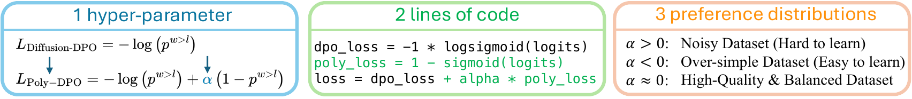
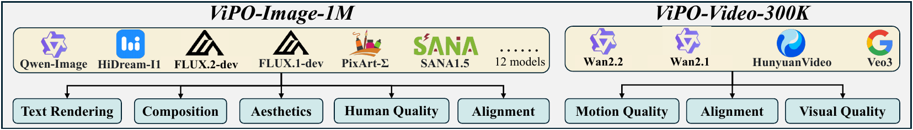
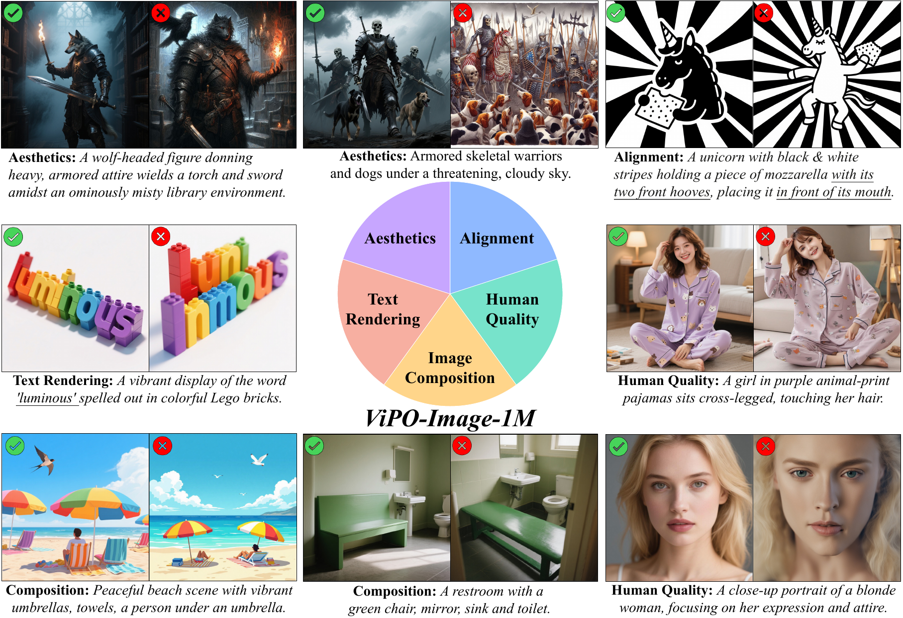
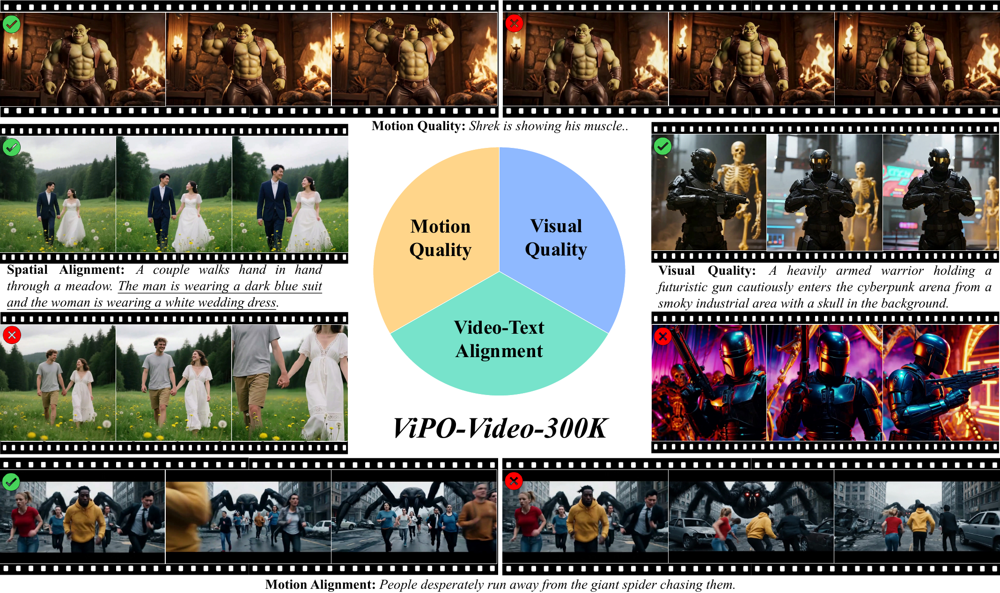
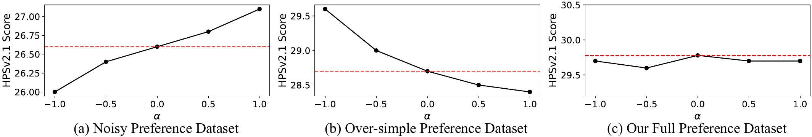
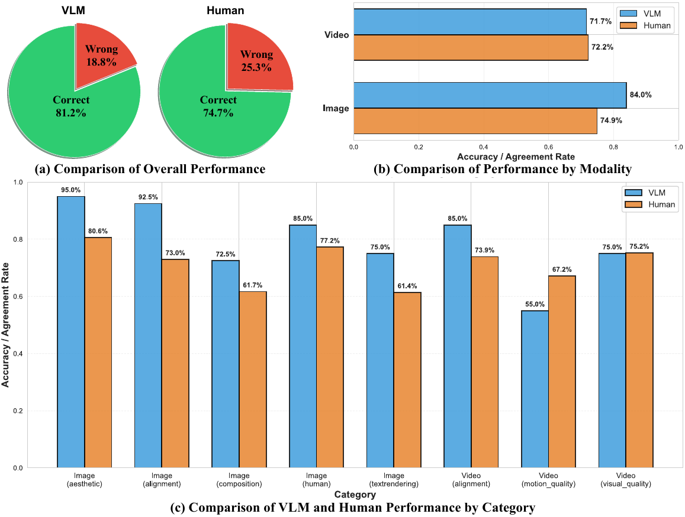
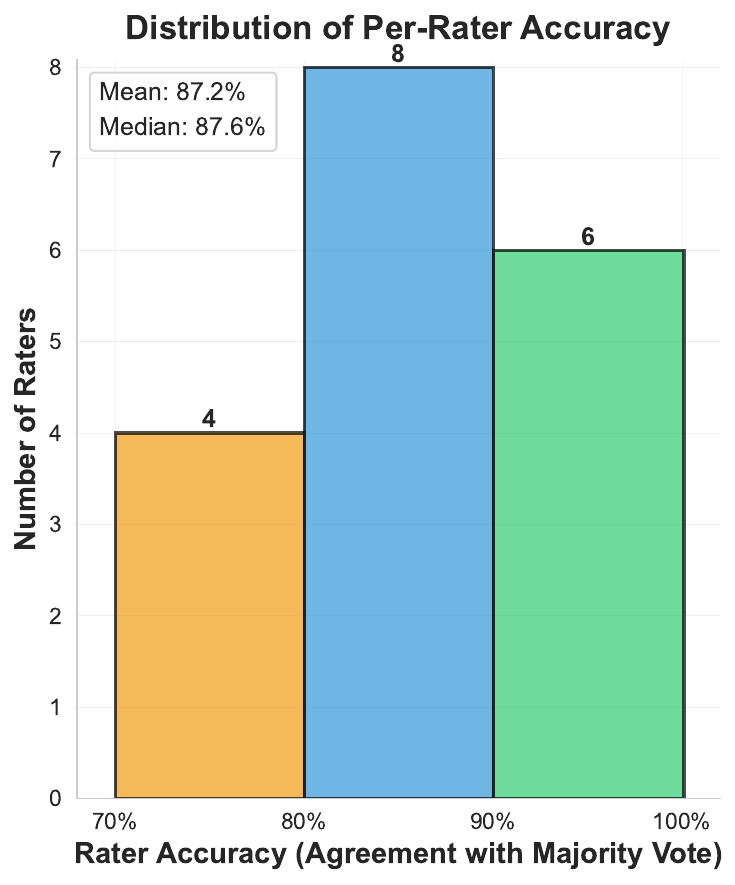

Poly-DPO makes preference optimization confidence-aware, while ViPO-Image-1M and ViPO-Video-300K provide the scale and quality needed to push visual alignment far beyond noisy legacy preference sets.
The paper argues that current visual preference optimization fails to scale because the field has been constrained by two bottlenecks: noisy and biased preference distributions in existing open datasets, and a lack of high-quality large-scale datasets for modern image and video generators.
While preference optimization is crucial for improving visual generative models, how to effectively scale this paradigm for visual generation remains largely unexplored. Current open-source preference datasets typically contain substantial conflicting preference patterns, where winners excel in some dimensions but underperform in others. Naively optimizing on such noisy datasets fails to learn meaningful preferences, fundamentally hindering effective scaling.
To enhance robustness against these noisy signals, the paper proposes Poly-DPO, which extends the DPO objective with an additional polynomial term that dynamically adjusts model confidence during training. To remove the data bottleneck, it builds ViPO, a large-scale preference dataset with 1M image pairs at 1024px across five categories and 300K video pairs at 720p+ across three categories.
A key observation in the manuscript is especially important: once the training data is sufficiently balanced and reliable, the best Poly-DPO configuration naturally converges back toward standard DPO. In other words, adaptive optimization matters most on imperfect datasets, while high-quality data makes the objective itself simpler and more stable.
A one-parameter extension of Diffusion-DPO that reweights learning by confidence, handling noisy, trivial, and balanced preference distributions with the same objective.
1 million 1024px image preference pairs spanning aesthetics, composition, alignment, text rendering, and portrait quality.
300 thousand 720p+ video preference pairs covering motion quality, visual quality, and video-text alignment.
ViPO is not only a dataset paper. It also reframes Diffusion-DPO as a binary classification objective and adds a single polynomial term that changes how aggressively the model learns from confident versus uncertain comparisons.
The added term makes the loss confidence-aware. Positive \(\alpha\) helps noisy datasets with conflicting preference patterns, negative \(\alpha\) regularizes trivially easy preference pairs, and high-quality balanced data naturally pushes the best setting back toward \(\alpha \approx 0\).

Upweights informative uncertain examples when preference pairs contain multi-dimensional conflicts, such as Pick-a-Pic V2.
Prevents overconfidence when winner/loser differences are too easy and the model would otherwise overfit to superficial patterns.
On ViPO-Image-1M, the best setting converges toward standard DPO, validating the underlying data quality.
The dataset construction emphasizes coverage, resolution, and reliable preference signals. Instead of relying on random collections built from early diffusion models, ViPO organizes preferences into explicit quality categories and uses strong modern generators and raters.



The source explicitly notes that the original internal version includes proprietary model outputs that may not be releasable as-is. To support reproducibility, the paper describes an alternative open version that substitutes those outputs with publicly available generators while preserving strong downstream performance.
The paper evaluates both the algorithmic contribution (Poly-DPO on noisy existing data) and the data contribution (training with ViPO-Image-1M and ViPO-Video-300K on multiple modern generator families).
| Setting | Method | PickScore ↑ | HPSv2.1 ↑ | ImageReward ↑ | GenEval overall ↑ |
|---|---|---|---|---|---|
| SD1.5 / Pick-a-Pic V2 test | Base SD1.5 | 20.57 | 25.02 | 0.085 | 42.34 |
| SD1.5 / Pick-a-Pic V2 test | Diffusion-DPO | 20.95 | 26.12 | 0.297 | 43.00 |
| SD1.5 / Pick-a-Pic V2 test | Diffusion-KTO | 21.06 | 28.06 | 0.628 | 43.65 |
| SD1.5 / Pick-a-Pic V2 test | Poly-DPO (ours) | 21.48 | 28.30 | 0.679 | 49.87 |
On SD1.5, Poly-DPO improves both scalar preference rewards and harder compositional generalization, especially on challenging GenEval sub-tasks like counting and attribute binding.
| Model family | GenEval overall ↑ | DPG-Bench overall ↑ | CVTG-2K word acc ↑ | Human quality ↑ |
|---|---|---|---|---|
| SD1.5 → +SFT & Poly-DPO | 0.42 → 0.54 | — | — | — |
| SDXL → +SFT & Poly-DPO | 0.56 → 0.63 | — | — | — |
| SD3.5-Medium → +SFT & Poly-DPO | 0.69 → 0.83 | 84.24 → 87.71 | 0.4378 → 0.6995 | 73.25 → 85.25 |
| FLUX.1-dev → +SFT & Poly-DPO | 0.69 → 0.79 | 83.84 → 87.31 | 0.4878 → 0.6859 | 80.00 → 88.75 |
The high-resolution ViPO dataset lifts multiple model families at once and improves not just composition, but also alignment, text rendering, and human anatomy quality.
| Wan2.1-T2V-1.3B | Human Identity ↑ | Dynamic Spatial Rel. ↑ | Motion Order Und. ↑ | Human Interaction ↑ | Motion Rationality ↑ |
|---|---|---|---|---|---|
| Base | 62.18 | 24.64 | 35.35 | 74.00 | 43.68 |
| + Poly-DPO on ViPO-Video-300K | 67.99 | 33.82 | 38.62 | 78.00 | 47.70 |
The paper reports especially strong motion-related gains, including a 37.4% improvement on Dynamic Spatial Relationship.

The authors validate both the reliability of the human annotations and the quality of their VLM-based rater.


@inproceedings{li2026vipo,
title = {ViPO: Visual Preference Optimization at Scale},
author = {Li, Ming and Wu, Jie and Cui, Justin and Li, Xiaojie and Wang, Rui and Chen, Chen},
booktitle = {International Conference on Learning Representations (ICLR)},
year = {2026}
}